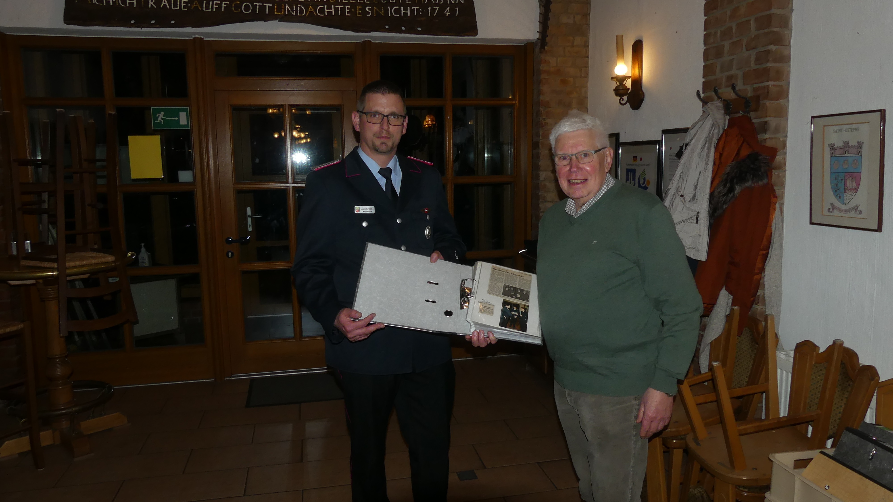

Jahreshauptversammlung: Ehrungen & ein historischer Schatz
Unsere Jahreshauptversammlung am 7. Januar hielt einen ganz besonderen Gänsehaut-Moment bereit: Kamerad Willi Beck, der seit über einem halben Jahrhundert die Geschichte unserer Wehr in Bildern, Artikeln und Videos dokumentiert hat, übergab seine beeindruckende Lebenssammlung an Marco Eikhoff. Ein unschätzbarer historischer Schatz für unsere Gemeinschaft!

Auch die feierlichen Beförderungen und Ehrungen kamen nicht zu kurz: Vanessa Bergmeier wurde zur Hauptfeuerwehrfrau befördert. Für ihren langjährigen Einsatz wurden Marcel Eikhoff und Tobias Hoffmeister (25 Jahre aktiv) sowie Wolfgang Klages für stolze 50 Jahre Mitgliedschaft gebührend geehrt.